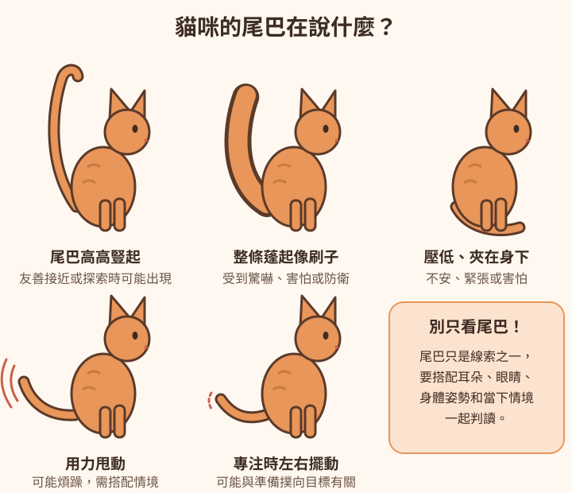
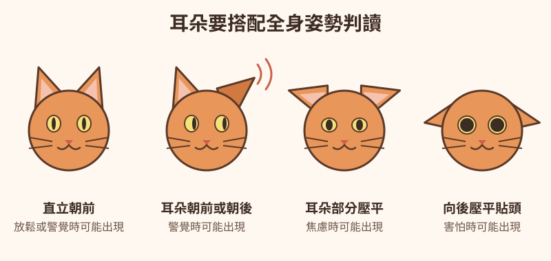
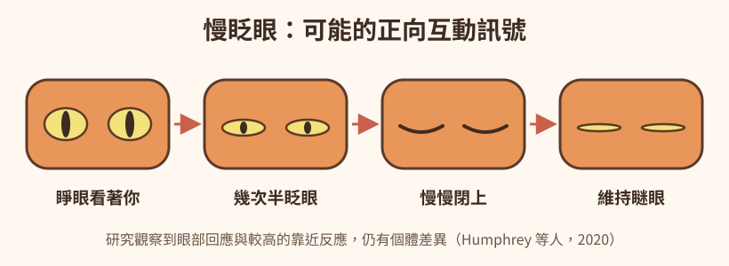
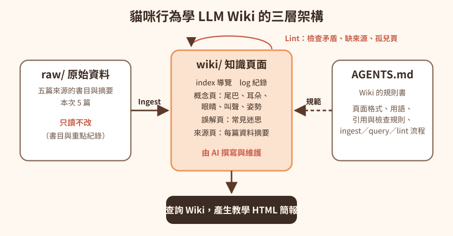

CAT BEHAVIOR / 貓咪行為學
你真的
懂貓咪嗎？
尾巴、耳朵、眼睛與叫聲，
一起讀懂貓咪的訊號。
給第一次認識貓咪行為的你
01 / 課前小測驗
你的直覺，準確嗎？
先想一想，再點開每題答案。
貓擺尾巴，就是開心嗎？
可能是玩耍、專注或煩躁。需要搭配情境與全身姿勢。
聽到呼嚕聲，就能放心摸牠嗎？
呼嚕聲也可能出現在索求、壓力或疼痛情境。健康疑慮應請獸醫檢查。
露出肚子，就是邀請摸肚子嗎？
露腹可能出現在玩耍，也可能出現在防衛情境。這個動作本身不足以判定。
題目為依據 Wiki 改寫的教學練習。
02 / 判讀原則
全身與情境，一起看
一個訊號，
可能有多種解讀。
快速擺尾可能出現在玩耍，
也可能出現在衝突。
- 先看身體姿勢放鬆，還是降低身體、緊繃？
- 再看頭與尾耳朵、眼睛和尾巴是否提供一致線索？
- 最後看情境正在玩、有人靠近，還是出現其他貓？
03 / 尾巴
尾巴在說什麼？

OSU 包含玩耍時快速擺尾；UPEI 強調煩躁與狩獵情境。保留差異，避免固定翻譯。
04 / 耳朵
耳朵朝向，也有情境

朝前不只出現在放鬆時，警覺與玩耍時也可能出現。
本次耳朵判讀主要來自一篇衛教講義，示意圖不能作為情緒診斷。
05 / 身體姿勢
露肚子，也需要判讀
放鬆的可能線索
側躺、趴臥或坐著。
耳朵可能自然或朝前。
緊繃與防衛的可能線索
身體降低、耳朵壓平。
防衛時可能拱背、蓬毛。
露腹可能出現在玩耍，
也可能出現在無法逃走時的防衛。
以上主要來自一篇衛教講義，不能只憑單一姿勢判斷。
06 / 眼睛
慢眨眼（slow blink）

一連串半眨眼，接著較長時間瞇眼或閉眼。
研究支持它可能參與正向互動，仍不能直接當成「愛你」的證明。
07 / 研究怎麼說
慢眨眼研究，發現了什麼？
| 比較條件 | 觀察結果 |
|---|---|
| 飼主慢眨眼 對照：沒有互動 | 貓的部分眼部動作增加。 |
| 陌生實驗者慢眨眼 對照：中性表情 | 貓對伸手邀請的靠近反應較高。 |
兩個實驗最終分析各 18 隻貓。
家中情境研究，視線方向、互動距離與飼主動作可能影響結果。不能推論每隻貓一定回應。
08 / 聲音
同一種聲音，可能有不同需求
- 喵叫 meow
- 貓與人的互動中常見。
不能只憑一聲就確定需求。 - 呼嚕聲 purr
- 可能滿足、索求，也可能有壓力或疼痛。
健康疑慮應請獸醫檢查。 - 哈氣 hiss
- 常見於衝突或警告情境。
仍需對照姿勢與當下環境。
聲音回顧中的部分研究只有少數個體，分類仍有不確定性。
09 / 喵叫辨識
人真的聽得懂喵叫嗎？
225位成人
聆聽六段喵叫，
辨識等待食物、獨處與梳毛。
錄音來自同一飼主的 10 隻緬因貓。不能推論所有貓與人。
代表性錄音的情境辨識正確率
每種情境兩段錄音，此處只呈現代表性錄音，並非六段的整體平均。
單憑聲音辨識情境，整體表現有限。
10 / 常見誤解
貓咪沒有固定翻譯字典
「擺尾就是開心」
玩耍、狩獵或煩躁，都可能伴隨尾巴移動。
OSU 與 UPEI 的描述情境不同，Wiki 保留差異。
「喵叫是貓之間的共通語言」
喵叫在貓與人的互動中常見，成貓彼此互動中相對少見。
相對少見仍有例外，不能說成完全不會。
觀察情境，比替每個動作貼上單一意思更有依據。
11 / 社交與學習
貓也有社交與學習行為
社交關係
互相理毛、靠近睡覺、
主動尋求陪伴或磨蹭。
這些行為不能直接等同人類的情感概念。
行為學習
使用貓砂盆、抓板或外出籠，
都是講義中的學習例子。
衛教建議在期望行為後給予獎勵。
訓練建議主要來自一篇衛教講義，本次沒有比較不同訓練方法成效的新實驗。
12 / 情境練習
看到這些線索，你會怎麼想？
以下為虛構教學情境，不是研究中的實際個案。
有人靠近時，貓降低身體，
耳朵壓平，尾巴貼近身體。
揭曉判讀方向
這些線索可能與緊繃或害怕一致。需要搭配完整情境，不能直接推論牠「討厭這個人」。
練習目的是整合多個線索，並保留不確定性。
13 / 帶走的觀念
讀懂貓，先保留情境
- 一起看
頭、耳朵、眼睛、尾巴、身體與聲音。
- 多留一種可能
同一個動作可能出現在不同情境。
- 尊重資料的限制
研究結果有適用範圍，衛教建議也需要情境。
若懷疑疼痛或健康問題，請獸醫檢查。
本簡報不提供診斷。
14 / 參考資料
肢體語言與慢眨眼
15 / 參考資料
叫聲與行為迷思
Tavernier, C., Ahmed, S., Houpt, K. A., & Yeon, S. C. (2020). Feline vocal communication. Journal of Veterinary Science, 21(1), Article e18. 來源連結
Prato-Previde, E., Cannas, S., Palestrini, C., Ingraffia, S., Battini, M., Ludovico, L. A., Ntalampiras, S., Presti, G., & Mattiello, S. (2020). What’s in a meow? A study on human classification and interpretation of domestic cat vocalizations. Animals, 10(12), Article 2390. 來源連結
Houston, K., & Clemmens, C. G. (2021, April). Behavior tips: Five myths about cat behaviour [衛教講義]. Sir James Dunn Animal Welfare Centre, University of Prince Edward Island. 來源連結
16 / 作業流程
這份簡報怎麼做出來的？

每篇重複 來源檢查、討論確認、寫入 Wiki、檢查與紀錄。
產出前檢查 每兩篇做階段檢查，五篇完成後檢查跨頁連結與來源差異。
生成迴圈 確認大綱後產生 HTML，發現問題便修正，再檢查。
17 / 實際反思
把檢查移到產出之前
資料取得
直接下載曾受阻，改由可用瀏覽器取得，再核對 PDF 格式、標題與頁數。
內容整合
擺尾與喵叫的來源描述不同，先比較情境，再寫進 Wiki，避免生成固定翻譯。
文件檢查
曾發現兩條紀錄連結與證據標籤格式問題。修正產生順序，加入標籤配對檢查。
目前重複受阻最多的是資料取得與工具存取。
本次僅執行一輪專案，不能據此推論所有任務最容易出錯的節點。